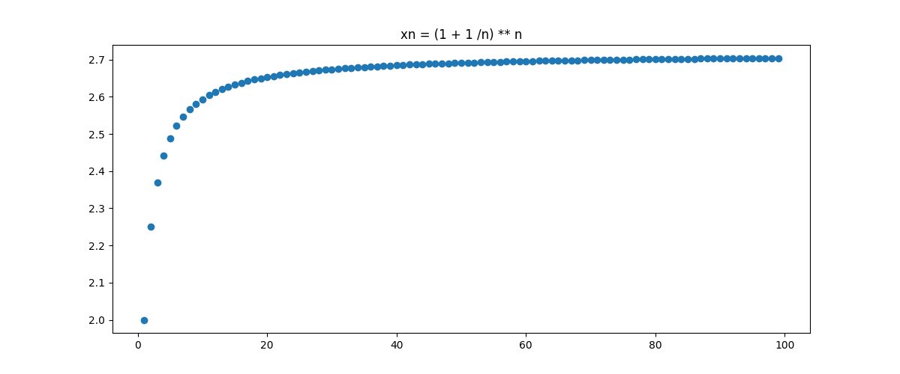
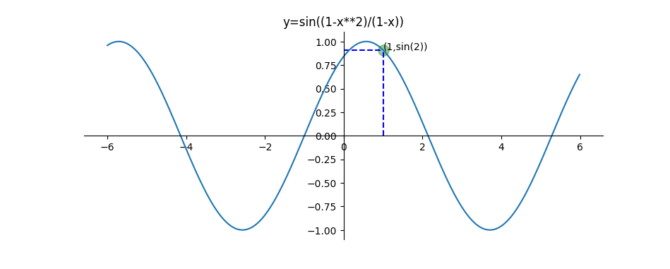
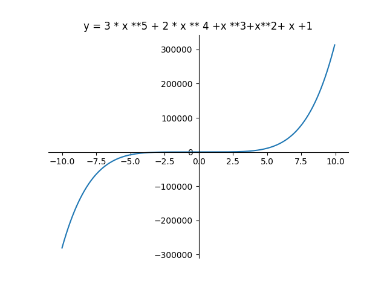
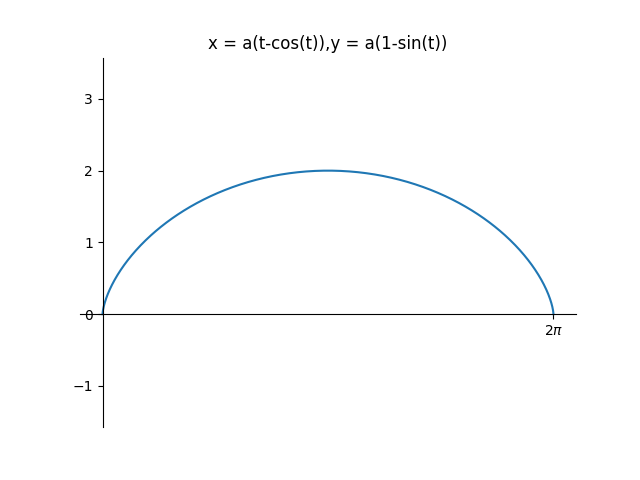
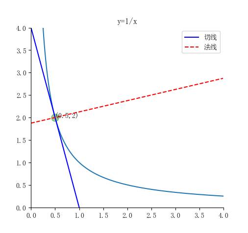

微积分的计算机实现
1 常用的库：sympy
基于符号运算，得到的结果会更加准确一些
| import sympy
print(sympy.sqrt(25), sympy.sqrt(7))
|
结果：5 sqrt(7)
1.1 主要功能
1.1.1 符号变量
Symbol('变量')
symbols('变量1 变量2 ... 变量n')
| x = Symbol('x')
x, y, z = symbols('x y z')
|
1.1.2 求导
diff(表达式, 自变量, [求导次数])
1.1.3 积分
支持不定积分与定积分。
integrate(表达式, (积分变量, [下限], [上限]))
| # 不定积分
integrate(x**2, x)
# 定积分
integrate(x**2, (x, 0, 1))
|
1.1.4 解方程
solve(表达式, 自变量)
1.1.5 表达式简化
-
expand() 将表达式展开
1.1.6 赋值操作
2 numpy
2.1 与 sympy 的区别
sympy 是符号计算，其中的函数都表示的是符号（如 sympy.sin()）
numpy 用于表示一些数值
因此使用 matplotlib.plot 画图时只能用 numpy
2.2 获得点集
2.2.1 numpy.arange()
3 极限
3.1 做法
3.2 例子
3.2.1 求数列极限\(\lim_{n\to\infty}\left(1+\frac{1}{n}\right)^{n}\)
1
2
3
4
5
6
7
8
9
10
11
12
13
14
15
16 | import sympy as sp
import matplotlib.pyplot as plt
import numpy as np
n = sp.Symbol("n") # 定义符号n
xn = (1 + 1 / n) ** n # 输入数列
l = sp.limit(xn, n, "oo") # 用l表示极限，输入：数列，变量，变化趋势
print("%s极限的值：%s" % (str(xn), str(l))) # 打印
n = np.arange(1, 100, 1) # 设置n取样点，1<n<100，间距为1
xn = (1 + 1 / n) ** n # 输入数列
plt.figure(figsize=(12, 5)) # 设置作图环境
plt.title("xn = (1 + 1 /n) ** n") # 显示标题文本
plt.scatter(n, xn) # 绘制数列的散点图
plt.axis("on") # 显示坐标轴
plt.show() # 显示出所绘制的图像
|
运行结果：
(1 + 1/n)**n极限的值：E

3.2.2 求极限\(\lim_{x\to1}\sin\left(\frac{1-x^2}{1-x}\right)\)的程序
1
2
3
4
5
6
7
8
9
10
11
12
13
14
15
16
17
18
19
20
21
22
23
24
25
26
27
28
29
30
31 | import sympy as sp
import matplotlib.pyplot as plt
import numpy as np
x = sp.Symbol("x") # 定义变量x
y = sp.sin((1 - x**2) / (1 - x)) # 输入函数
lz = sp.limit(y, x, 1, dir="-") # 用lz表示左极限
ly = sp.limit(y, x, 1, dir="+") # 用ly表示右极限
print("%s 左极限是：%s" % (str(y), str(lz))) # 打印
print("%s 右极限是：%s" % (str(y), str(ly))) # 打印
ax = plt.gca() # 获得当前的Axes对象ax
ax.spines["right"].set_color("none") # 去掉右边框
ax.spines["top"].set_color("none") # 去掉上边框
ax.spines["bottom"].set_position(("data", 0)) # 将坐标置于坐标0处
ax.spines["left"].set_position(("data", 0)) # 将坐标置于坐标0处
x = np.arange(-6, 6, 0.01) # 设置x取样点
y = np.sin((1 - x**2) / (1 - x)) # 输入函数
plt.title("y=sin((1-x**2)/(1-x))") # 给图形添加标题
plt.plot(
[0, 1], [np.sin(2), np.sin(2)], linestyle="--", color="b"
) # 绘制过[0,sin(2)],[1,sin(2)]两点的蓝色虚线
plt.plot(
[1, 1], [0, np.sin(2)], linestyle="--", color="b"
) # 绘制过[1,0],[1,sin(2)]两点的蓝色虚线
plt.text(1, np.sin(2), "(1,sin(2))") # 绘制点的坐标
plt.scatter(
1, np.sin(2), s=120, color="g", alpha=0.4
) # 在点(1,sin(2)处绘制大小为120像素透明度为0.4的绿色点
plt.plot(x, y) # 绘制函数图像
plt.show() # 显示出所绘制的图像
|
运行结果：
sin\(\(1 - x\*\*2\)/\(1 - x\)) 左极限是：sin\(2\)
sin\(\(1 - x\*\*2\)/\(1 - x\)) 右极限是：sin\(2\)

4 导数与微分
4.1 做法
1.1.2 求导
diff(表达式, 自变量, [求导次数])
参数方程求导：\(\frac{\mathrm{d}y}{\mathrm{d}x}=\frac{\mathrm{d}y}{\mathrm{d}t}/\frac{\mathrm{d}x}{\mathrm{d}t}\)
4.2 例子
4.2.1 一元函数
4.2.1.1 设\(f\left(x\right)=3x^5+2x^4+x^3+x^2+x+1\)，求\(f(x)\)的微分及\(f^{(4)}(1)\)的程序
1
2
3
4
5
6
7
8
9
10
11
12
13
14
15
16
17
18
19
20
21
22
23
24
25
26 | import sympy as sp # 导入sympy记作sp
import numpy as np # 导入numpy 记作np
import matplotlib.pyplot as plt # 导入matplotlib.pyplot记作plt
x = sp.Symbol("x") # 定义变量x
dx = sp.Symbol("dx") # 定义符号dx
y = 3 * x**5 + 2 * x**4 + x**3 + x**2 + x + 1 # 输入函数
w = sp.diff(y, x, 1) # 用w表示一阶导数
wf = w * dx # 用wf表示微分
print("函数的微分为：%s" % wf) # 打印
for n in range(1, 5): # 在for循环中从1到4给n赋值
y = d = sp.diff(y) # 用d表示对y求导
print("第%2d阶导数为：%s" % (n, d)) # 打印
ysjd = d.evalf(subs={x: 1}) # 用ysjd表示在表达式d中赋值x=1
print("当x=1时，四阶导数的值为：%d" % (ysjd)) # 打印
x = np.arange(-10, 10, 0.05) # 设置x取样点
y = 3 * x**5 + 2 * x**4 + x**3 + x**2 + x + 1 # 输入函数
plt.plot(x, y) # 绘制函数图像
plt.title("y = 3 * x **5 + 2 * x ** 4 +x **3+x**2+ x +1") # 给图形添加标题
ax = plt.gca() # 获得当前的Axes对象ax
ax.spines["right"].set_color("none") # 去掉右边框
ax.spines["top"].set_color("none") # 去掉上边框
ax.spines["bottom"].set_position(("data", 0)) # 将坐标置于坐标0处
ax.spines["left"].set_position(("data", 0)) # 将坐标置于坐标0处
plt.show() # 显示出所绘制的图像
|
运行结果：
函数的微分为：dx*\(15\*x\*\*4 + 8\*x\*\*3 + 3\*x\*\*2 + 2\*x + 1\)
第 1阶导数为：15*x**4 + 8*x**3 + 3*x**2 + 2*x + 1
第 2阶导数为：60*x**3 + 24*x**2 + 6*x + 2
第 3阶导数为：180*x**2 + 48*x + 6
第 4阶导数为：360*x + 48
当x\=1时，四阶导数的值为：408

4.2.1.2 求参数方程\(\begin{cases}x=a\left(t-\sin t\right)\\ y=a\left(1-\cos t\right)\end{cases}\)所确定的函数\(y=y(x)\)的一阶导数和二阶导数
1
2
3
4
5
6
7
8
9
10
11
12
13
14
15
16
17
18
19
20
21
22
23
24
25
26
27
28
29 | import matplotlib.pyplot as plt # 导入matplotlib.pyplot记作plt
import numpy as np # 导入numpy 记作np
import sympy as sp # 导入sympy记作sp
a = sp.Symbol("a") # 定义变量a
t = sp.Symbol("t") # 定义变量t
x = a * (t - sp.sin(t)) # 输入x的参数方程
y = a * (1 - sp.cos(t)) # 输入y的参数方程
d1 = sp.diff(y, t) / sp.diff(x, t) # 用d1表示参数方程的一阶导数
print("原参数方程一阶导数结果为：%s" % d1) # 打印
d2 = sp.diff(d1, t) / sp.diff(x, t) # 用d2表示参数方程的二阶导数
print("原参数方程的二阶导数结果为：%s" % d2) # 打印
d2 = sp.simplify(d2) # 将d2化简
print("原参数方程的二阶导数化简为：%s" % d2) # 打印
a = 1 # 给a赋值1
t = np.arange(0, 2 * np.pi, 0.01) # 设置t取样点
x = a * (t - np.sin(t)) # 输入x的参数方程
y = a * (1 - np.cos(t)) # 输入y的参数方程
plt.plot(x, y) # 绘制函数图像
plt.title("x = a(t-cos(t)),y = a(1-sin(t))") # 给图形添加标题
plt.xticks([2 * np.pi], [r"$2\pi$"]) # 绘制x轴上的点2*pi
plt.axis("equal") # x,y轴刻度等长
ax = plt.gca() # 获得当前的Axes对象ax
ax.spines["right"].set_color("none") # 去掉右边框
ax.spines["top"].set_color("none") # 去掉上边框
ax.spines["bottom"].set_position(("data", 0)) # 将坐标置于坐标0处
ax.spines["left"].set_position(("data", 0)) # 将坐标置于坐标0处
plt.show() # 显示出所绘制的图像
|
运行结果：
原参数方程一阶导数结果为：sin\(t\)/\(1 - cos\(t\))
原参数方程的二阶导数结果为：\(cos\(t\)/\(1 - cos\(t\)) - sin\(t\)**2/\(1 - cos\(t\))**2)/\(a\*\(1 - cos\(t\)))
原参数方程的二阶导数化简为：-1/\(a\*\(cos\(t\) - 1)**2)

4.2.1.3 求双曲线 \(y=\dfrac{1}{x}\) 在\((\frac12,2)\)的切线和法线
1
2
3
4
5
6
7
8
9
10
11
12
13
14
15
16
17
18
19
20
21
22
23
24
25
26
27
28
29
30
31
32
33
34
35
36 | import matplotlib.pyplot as plt # 导入matplotlib.pyplot记作plt
import numpy as np # 导入numpy 记作np
import sympy as sp # 导入sympy记作sp
plt.rcParams["font.sans-serif"] = ["SimSun"] # 设置默认字体为宋体
plt.rcParams["axes.unicode_minus"] = False # 用来正常显示负号
x = sp.Symbol("x") # 定义变量x
f = 1 / x # 输入函数
d = sp.diff(f, x) # 用d表示一阶导数
print("导数结果为：%s" % d) # 打印
yd = d.evalf(subs={x: 1 / 2}) # 用yd表示x=1/2时的一阶导数
print("切点处切线的斜率：%s" % yd) # 打印
qx = yd * (x - 0.5) + 2 # 输入切线方程
print("切线方程为：%s" % qx) # 打印
fx = (-1 / yd) * (x - 0.5) + 2 # 输入法线方程
print("法线方程为：%s" % fx) # 打印
x = np.arange(0, 4, 0.01) # 设置x取样点
y = 1 / x # 输入函数
qx = -4.0 * x + 4.0 # 输入切线方程
fx = 0.25 * x + 1.875 # 输入法线方程
plt.axis([0, 4, 0, 4]) # 建立绘图区域
plt.plot(x, y) # 绘制函数图像
plt.title("y=1/x") # 给图形添加标题
ax = plt.gca() # 获得当前的Axes对象ax
ax.spines["right"].set_color("none") # 去掉右边框
ax.spines["top"].set_color("none") # 去掉上边框
ax.spines["bottom"].set_position(("data", 0)) # 将坐标置于坐标0处
ax.spines["left"].set_position(("data", 0)) # 将坐标置于坐标0处
plt.text(0.5, 2, "(0.5,2)") # 在点(0.5,2)处标记
plt.scatter(0.5, 2, s=120, color="g", alpha=0.4) # 绘制点 (0.5,2)
plt.plot(x, qx, color="blue", linestyle="-", label=r"切线") # 绘制切线
plt.plot(x, fx, color="red", linestyle="--", label=r"法线") # 绘制法线
plt.legend() # 给图加上图例
plt.show() # 显示出所绘制的图像
|
运行结果：
导数结果为：-1/x**2
切点处切线的斜率：-4.00000000000000
切线方程为：4.0 - 4.0*x
法线方程为：0.25*x + 1.875

5 积分
5.1 做法
1.1.3 积分
支持不定积分与定积分。
integrate(表达式, (积分变量, [下限], [上限]))
| # 不定积分
integrate(x**2, x)
# 定积分
integrate(x**2, (x, 0, 1))
|
5.2 例子
5.2.1 一元函数
5.2.1.1 计算定积分 \(\int_{-1}^{\sqrt3}\!\frac{1}{1+x^2}\,\mathrm{d}x\)
1
2
3
4
5
6
7
8
9
10
11
12
13
14
15
16
17
18
19
20
21
22
23
24
25
26
27
28 | import sympy as sp # 导入sympy记作sp
import numpy as np # 导入numpy记作np
import matplotlib.pyplot as plt # 导入matplotlib.pyplot记作plt
x = sp.Symbol("x") # 定义变量x
y = 1 / (1 + x**2) # 输入函数
bdjf = sp.integrate(y, x) # 用bdjf表示不定积分，输入：函数，自变量
djf = sp.integrate(
y, (x, -1, sp.sqrt(3))
) # 用djf表示定积分，输入：函数，(自变量，下限，上限）
print("不定积分的结果为：%s" % bdjf) # 打印
print("定积分的结果为：%s" % djf) # 打印
x = np.arange(-3, 3, 0.01) # 设置x范围
y = 1 / (1 + x**2) # 输入函数
plt.plot(x, y) # 绘制函数图像
plt.title("y =1/(1+ x ** 2) ") # 显示标题文本
plt.plot([-1, -1], [0, 0.5], linestyle="--", color="b") # 绘制过两点虚线
plt.plot(
[np.sqrt(3), np.sqrt(3)], [0, 0.25], linestyle="--", color="b"
) # 绘制过两点虚线
plt.xticks([-1, 0, np.sqrt(3)], ["-1", "0", r"sqrt(3)"]) # 绘制x轴上的点的坐标
ax = plt.gca() # 获得当前的Axes对象ax
ax.spines["right"].set_color("none") # 去掉右边框
ax.spines["top"].set_color("none") # 去掉上边框
ax.spines["bottom"].set_position(("data", 0)) # 将坐标置于坐标0处
ax.spines["left"].set_position(("data", 0)) # 将坐标置于坐标0处
plt.show() # 显示出所绘制的图像
|
5.2.1.2 计算不定积分
同理。
6 常微分方程
6.1 一阶常微分方程
6.1.1 做法
- 定义变量 x：
x = sp.Symbol("x")
- 定义函数 f：
f = sp.Function("f")
- 输入函数：
y = f(x)
- 构建微分方程：
d = sp.Eq(左式, 右式)
-
求解：result = sp.dsolve(d, y)
6.1.2 例子
6.1.2.1 求微分方程 \(\frac{\mathrm{d}y}{\mathrm{d}x}+y=e^{-x}\) 的通解
| import sympy as sp # 导入sympy记作sp
x = sp.Symbol("x") # 定义变量
f = sp.Function("f") # 创建函数
y = f(x) # 输入函数
d = sp.Eq(y.diff(x) + y, sp.exp(-x)) # 用d表示输入的微分方程
wffc = sp.dsolve(d, y) # 用wffc表示求解微分方程
print("微分方程的通解为：%s" % wffc) # 打印
sp.pprint(sp.dsolve(d, y)) # 漂亮的打印
|
输出结果：
微分方程的通解为：Eq(f(x), (C1 + x)*exp(-x))
f(x) = (C₁ + x)⋅ℯ\(^{-x}\)